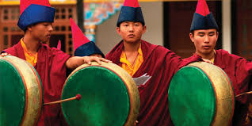

All About- 'Sikkim'
SIKKIM - THE BROTHER STATE
Sikkim is a state in northeastern India. It borders Tibet in the north and northeast, Bhutan in the east, Nepal in the west, and West Bengal in the south.
Sikkim is also located close to India's Siliguri Corridor near Bangladesh.
Sikkim is the least populous and second smallest state among the Indian states.

Cultures, Religions and Customs of different hues intermingle freely here in Sikkim to constitute a homogeneous blend.
The predominant communities are the LEPCHAS, BHUTIAS and NEPALESE.
In urban areas, many plainsmen have also settled and they are almost engaged in business and Government service.
